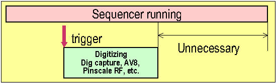

Digital Capture Test
For plain digital tests use the Test Method API DIGITAL_CAPTURE_TEST and not the API EXECUTE_TEST.
The DIGITAL_CAPTURE_TESTAPI executes a test which contains digital capturing.
This API starts the digital sequencer and waits for its completion.
Some test programs upload more data than is needed for computation. Adjusting the values in the vector variable can save unnecessary upload time.
This is illustrated in the following figure.

Sometimes sample size can be reduced to still test the device. This reduces the amount of data to upload, resulting in faster execution.
Note that the digital capture test contains a FLUSH (see Working with FLUSH()).
Functional changes
- Introduced before SmarTest 6.3.2